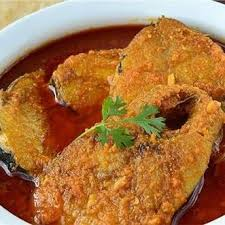
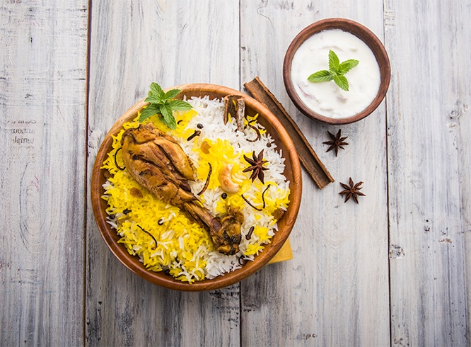
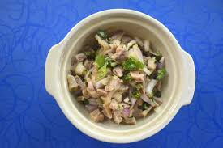
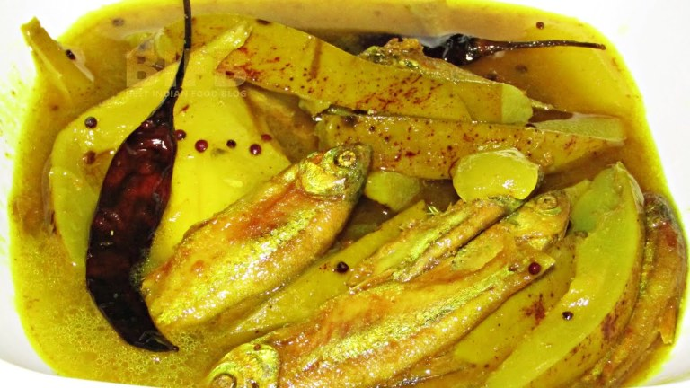
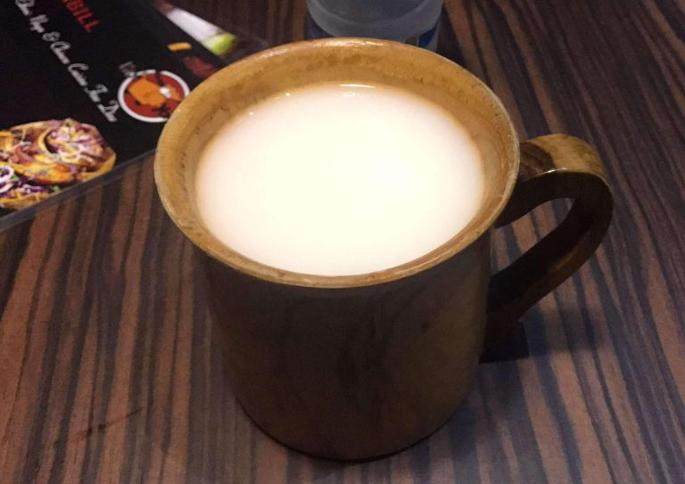
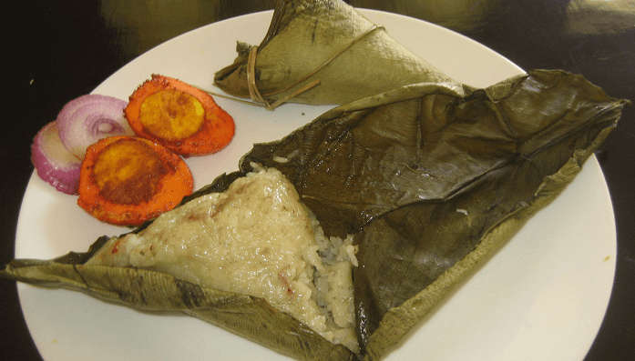
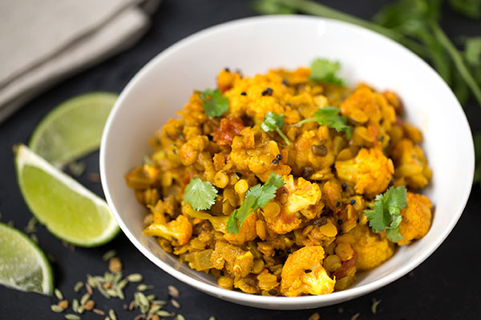

LOCAL CUISINE
Tripura is also known as “Queen of Eastern Hills.” The royalty of Tripura is reflected in its cultural and climatic diversity as well as on the food habit of tribal and non-tribal people of Tripura. Tripura is famous for its food culture as the main ingredients of Tripura cuisine are rice, fish, chicken, mutton, and pork.
Here are some traditional foods of Tripura –
- Mui Borok – Mui Borok is the traditional dish of Tripura. This dish is prepared from the staple ingredient of Tripura that is Berma. Berma is a bit salty and a little bit spicy dried and fermented fish, cooked without oil, and extremely healthy.

Mui Borok
- Kosai Bwtwi – Kosai Bwtwi is prepared using Berma, the fermented fish, chopped onions, green chili, tofu pieces, garlic cloves, salt, and turmeric powder. Khundrupui leaves are also added to enhance the flavor of Kosai Bwtwi.

Kosai Bwtwi
- Wahan Mosdeng – WahanMosdeng is one of the traditional dishes of Tripura prepared with pork, onion, coriander leaves, and green chili. The addition of Green chili and local spices made this dish more delightful and lip-smacking.

Wahan Mosdeng
- Gudok – Gudok is the traditional dish prepared by boiling vegetables and fermented fish. This dish is prepared and served during special occasions and festivals.

Gudok
- Chuak– Chuak is the traditional rice beer of Tripura. The beer is prepared by fermenting the rice. This drink is served on special occasions and festivals of Tripurians. It has its various versions such as Mami rice, pineapple, jack fruit, etc. Chuak is one of the safest alcohol drinks in the world.

Chuak
- Mosdeng Serma – Mosdeng Serma is the tomato chutney prepared with Berma, red chili, and garlic. This spicy and tangy chutney enhances the flavors of other dishes also.

Mosdeng Serma
- Bhangui – Bhangui is a rice dish prepared with the rice boiled with ghee, ginger, and onion. The dish is prepared on Banana leaf to keep intact its nutrients.

Bhangui
- Panch Phoron Tarkari – Panch Phoron Tarkari is a Bengali dish prepared using vegetables like brinjal, pumpkins, potatoes, red chili, bay leaves, green chili, and turmeric powder.

Panch Phoron Tarkari
This dish is a combination of five spices and served with paratha or puri.
Know More about the State